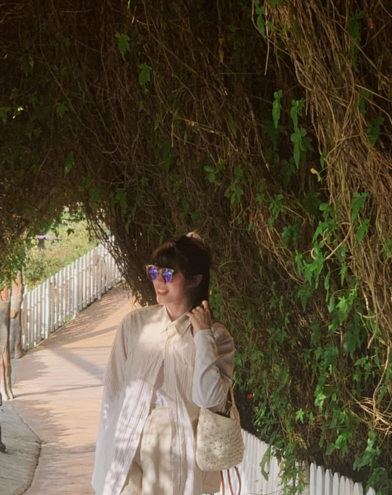

01 — WHAT I LOVE
Things that I interest
✦ Drawing
✦ Traveling
✦ Listen to Music
✦ Visual Creativity
✦ Interactive Experiencest
Emily Chiam
Multimedia Computing · UNIMAS · Kuching
Interface designer, builder of small games, desktop apps and terminal systems.
01 · ABOUT ME
Every little detail is part of the journey.

A lover of beautiful things.
I'm Emily Chiam, a Bachelor of Computer Science student majoring in Multimedia Computing at Universiti Malaysia Sarawak (UNIMAS).
I am passionate about exploring the creative side of technology, particularly in areas such as UI/UX design, multimedia experiences, and interactive projects.
01 — WHAT I LOVE
02 — MY TOOLBOX
02 · Projects
The stars down the middle are the seven projects. Click one to jump, or open a step for the story, every screen, and the code.
Nothing in this discipline yet.
03 · Contact
A placement, a project, or just a thought about a screen that could be better. I would like to hear it.